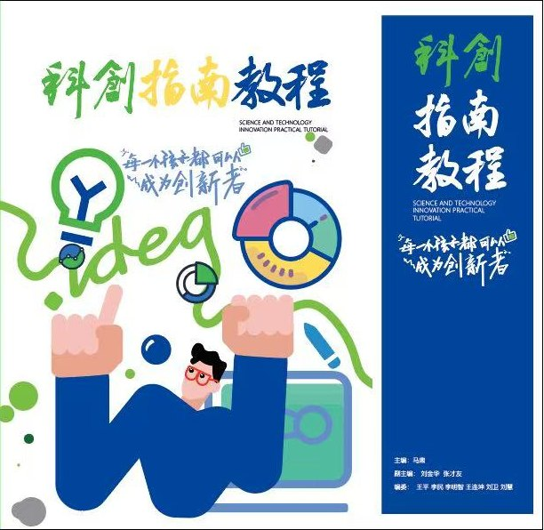

Book and Curriculum / Youth Innovation
《AI时代青少年科创实战教程》：从发现问题到保护成果的一条完整创新路线
这本教材把青少年科创从“想一个点子”重新组织为一套可训练、可执行、可复盘的实践路线。它不是让学生背概念，而是带学生完整走过一次真实创新闭环。

为什么这本教材重要
很多学生第一次做科创项目时，会被要求“想一个创新作品”。但真正困难的不是把一个作品做得很炫，而是发现一个真实问题，判断它是否值得解决，再把模糊想法变成可以调查、可以检索、可以制作、可以测试、可以表达和可以保护的成果。
《AI时代青少年科创实战教程》正是围绕这件事展开。它把我的专利审查经验、发明创造经验、专利代理经验和青少年科创辅导经验融合在一起，形成一条完整路线：发现问题，分析问题，寻找资源，提出方案，制作原型，测试迭代，展示价值，保护成果。
对网站而言，这本教材是马肃个人 IP 的核心证明之一：我的方法论不只停留在文章观点或咨询经验中，而是已经被转化为可以交给学生、老师、学校和赛事组织者使用的课程系统。
教材的完整路线
教材从“未来需要会创造的人”开始，引导学生理解 AI 时代真正稀缺的能力不是等待标准答案，而是发现尚未被定义的问题，并把问题推进成可验证的解决方案。
全书主体包括 14 章：从兴趣和生活中发现问题，用社会调查找到真问题，用数据把方向变成具体问题；进入专利库、论文和科技新闻，学习已有技术；再通过组合法、逆向法、表格创意拼盘法生成方案；随后进入 AI 协同创新、原型制作、实验验证、成果展示、知识产权保护和真实价值转化。
这条路线特别强调“做出来”和“说清楚”。学生不只要有想法，还要保留调查记录、专利检索记录、发明日志、草图、模型照片、测试数据和答辩材料。这样，创新才不是一次临时比赛，而是一种能够被训练和迁移的能力。
AI 在教材中的位置
教材没有把 AI 当作替学生完成作品的工具，而是把 AI 设定为“科创队友”。AI 可以帮助学生分类兴趣、优化问卷、扩展关键词、检查方案风险、整理报告结构、辅助 3D 表达，但不能替代学生的观察、判断、测试和改进。
这也是我对 AI 时代科创教育的基本判断：AI 会让答案变得更容易获得，但会让“提出好问题”的能力更加珍贵。一个会使用 AI 的学生，不应该只是更快完成作业，而应该更善于追问真实场景、发现真实需求、形成真实证据链。
附录让教材变成工具箱
除了正文，教材还设计了多个实操附录，包括 12 课时科创实战课程设计、AI 提示词库、100 个青少年科创选题种子、完整项目档案示范、问卷题库、给青少年的知识产权六课简版、学生自评与成长档案、给学生看的十封信，以及导师批注中常见的十个坑。
这些附录的作用，是让老师、家长和赛事组织者可以真正把课程落地。学生可以从选题种子开始，老师可以按课时组织训练，导师可以用检查清单追踪项目进展，赛事可以用项目档案判断学生是否真实参与了创新过程。
和专利方法论的连接
这本教材的底层逻辑，仍然来自专利和发明。专利不是课程末尾才出现的“申请动作”，而是贯穿整个创新过程的知识系统。学生在专利库里看到人类已经如何解决问题，也会理解自己的方案必须在已有技术基础上找到新的技术特征、新的应用场景或新的组合方式。
因此，青少年科创训练并不是把孩子包装成“小发明家”，而是让他们学会一种严肃的创造方式：观察真实世界，尊重已有技术，提出新的解决方案，用实验验证价值，并用知识产权意识保护自己的创造。
适合怎样使用
这套教材可以服务三类场景：学校和科创社团的系统课程，地方青少年科创赛事的赛前训练，以及企业、园区或教育机构发起的创新实践营。它既可以作为学生读本，也可以拆解为导师手册、课程讲义、比赛工作簿和项目评审标准。
后续，我会把教材中的部分内容继续整理成文章，例如如何设计科创问卷、如何带青少年做专利检索、如何用 AI 生成候选方向但不替代学生思考、如何把比赛作品推进到真实产品和知识产权成果。